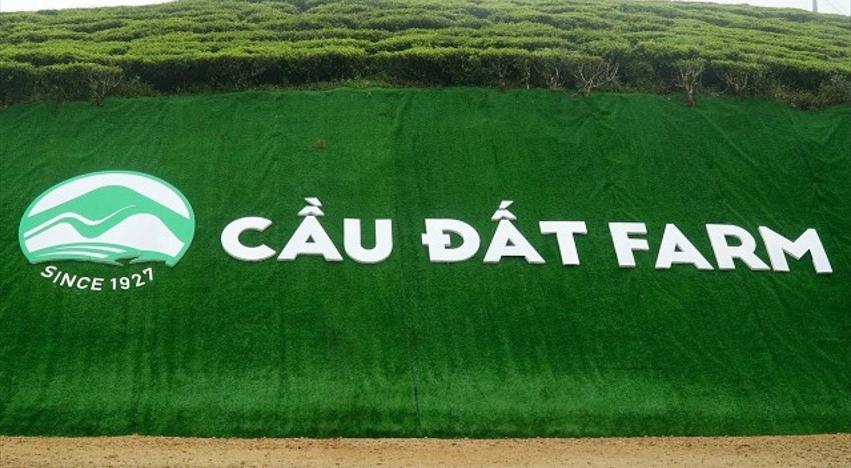
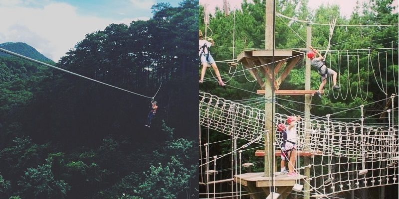
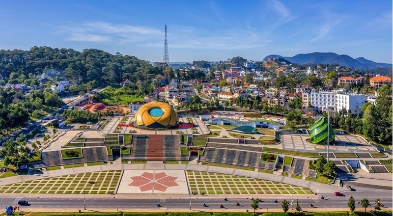
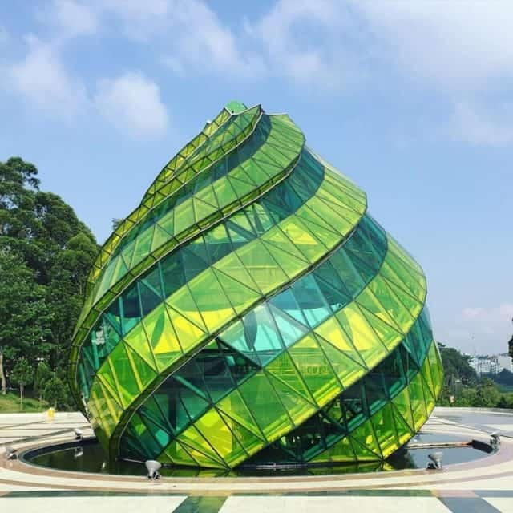
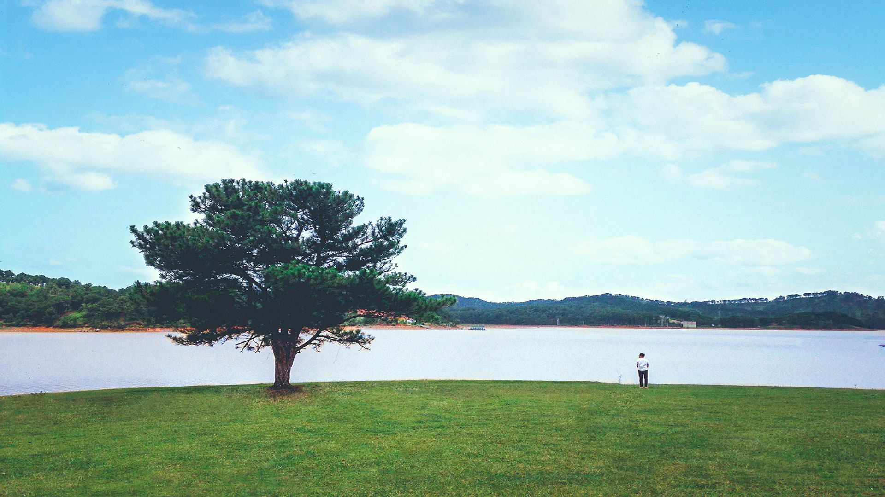
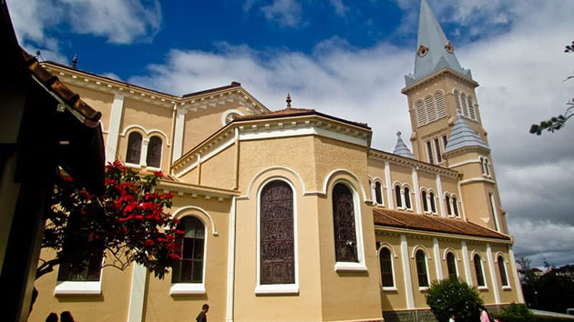

Đồi chè Cầu Đất
1. Giới thiệu đồi chè cầu đất
Đồi chè cầu đất hiện ra trong khung cảnh thiên nhiên hài hòa giữa màu xanh dương của đám mây kết hợp với hình ảnh núi đồi rợp lên một màu xanh lá cây trải dài từ dãy này qua dãy khác, cùng với những chú chim bay lượn trên cao tạo nên một bức tranh phong cảnh đẹp tuyệt vời.
Đồi chè cầu đất một trong những điểm du lịch hấp dẫn nhất từ trước đến nay. Được hàng nghìn du khách ghé đến tham quan chụp ảnh và còn là địa điểm của những cặp đôi đến đây để chụp ảnh cưới lưu niệm.
2. Đồi chè cầu đất ở đâu?
Địa chỉ: Xuân trường. Tp Đà Lạt Lâm Đồng
3. Du lịch đồi chè Cầu Đất
Nằm cách trung tâm thành phố 30km về hướng tây. Khoảng 45 phút đi xe trên một quãng đường dài xung quanh bao vây bởi rừng thông xanh. Đến nơi du khách sẽ thấy trước mắt mình hiện ra một khoảng không gian mênh mông của đồi chè xanh mướt.
Có diện tích rộng gần 220 héc ta, nơi ấy còn có một tác phẩm đã ghi dấu ấn gần 100 năm. Thành lập nên nhà máy trà cầu đất, bình trà ấy cao 2,6m ngang tận 7,1m và cân nặng lên đến 3 tấn. Nếu có dịp đến đây tham quan chắc chắn các bạn sẽ thích thú khi tận mắt nhìn thấy hình ảnh này.
Đồi chè không chỉ là nơi sản xuất đưa sản phẩm chè ra ngoài thị trường hằng năm có hon 1000 tấn lá tươi đưa đi tiêu thụ, tương ứng với khoảng 260 tấn
Và còn là nơi tham quan du lịch đà lạt của nhiều du khách trong và ngoài nước. Ghé đến thưởng thức những tách trà thơm ngon đậm đà ngay tại xưởng.
Hãy cùng tận hưởng một bầu không gian trong xanh thoáng đãng xõa đi bao nhiêu mệt nhọc trong công việc, mọi áp lực đến đây để giải tỏa bao nhiêu muộn phiền.
4. Chơi gì tại Đồi Chè Cầu Đất
Đầu tiên là chụp hình, rất nhiều bức ảnh siêu Cool đã xuất hiện từ đây làm cư dân mạng điên đảo
Ngoài ra các bạn hãy thử trải nghiệm làm người nông dân tự tay hái những lá trà, cùng đem về xưởng xao trà , vo trà…. Tự tay làm cho mình một tách trà thơm ngon để cho gia đình, bạn bè cùng thưởng thức.
Mọi người hãy yên tâm nhâm nhi những lá trà ngoài kia vì chúng luôn được chăm sóc rất kỹ lưỡng đảm bảo tiêu chuẩn 4 không:
-Đó là không dư lượng phân bón.
-Không dư lượng thuốc trừ sâu.
-Không phẩm màu.
-Không chất bảo quản đảm bảo sản phẩm sạch luôn an toàn cho người tiêu dùng.
Đến rồi hãy mua cho mình một gói trà sản phẩm của đồi chè đem về biếu cho người thân mình làm quà nhé.
Thiền viện Trúc Lâm
1. Thiền viện trúc lâm Đà Lạt ở đâu?
Thiền viện thuộc đường Trần Thánh Tông nằm trên đồi Phụng Hoàng thuộc phường 3 thành phố Đà Lạt tỉnh Lâm Đồng
2. Truyền thuyết về Thiền Viện Trúc Lâm Đà Lạt
Vào một đêm những năm 1986 khi đang say mình trong giấc ngủ ngài Thích Thanh Từ nằm mộng thấy mình đang ôm cổ Phụng Hoàng bay vút lên. Tỉnh giấc sau khi chiêm nghiệm ngài liền nghĩ tới thành phố Đà Lạt với khí hậu mát mẻ quanh năm, phong cảnh tuyệt đẹp, núi hồ thanh vắng nếu có một thiền viện cho chúng tăng tu đạo sẽ sớm thành chính quả.
VàoChính vì thế ngài đã phác họa toàn cảnh thiền viện và đi tìm địa điểm thích hợp để xây cất. Khi tới khu vực Hồ Tuyền Lâm ngài rất hài lòng chúng Phật tử vì vậy liền thuận theo ý ngài tiến hành các thủ tục xin cấp đất.
3. Quá trình xây dựng Thiền Viện Trúc Lâm Đà Lạt
Thiền viện Trúc Lâm được xây dựng vào ngày 08/04/1993 và đến ngày 08/02/1994 thì hoàn thành và bắt đầu khóa thiền đầu tiên. Người thiết kế là ông Vũ Xuân Hùng và Trần Đức Lộc và kiến trúc sư rất nổi tiếng thời đó là Ngô Viết Thụ – người đã thiết kế ra Dinh Độc Lập ở thành phố Hồ Chí Minh.
4. Tham quan Thiền Viện Trúc Lâm
Nếu du khách đang du ngoạn Hồ Tuyền Lâm có thể đi bộ lên một con dốc có 140 bậc bằng đá đi qua tất cả ba cổng tam quan để đi vào tham quan chánh điện.
Chánh điện của Thiền Viện Trúc Lâm có diện tích 192 m2 bên trong thờ đức Phật Bổn Sư Ca Thích Mâu Ni cao 2 m tay phải ngài cầm cành hoa sen đưa lên theo điển tích “Niên Hoa Vi Tiếu” của nhà Phật. Nhìn bức tượng phật này chắc chắn du khách sẽ liên tưởng tới bức tượng khổng lồ ở Chùa Vạn Hạnh.
Ở phía trên chánh điện có các bức phù điêu chạm khắc tinh sảo về 8 tướng thị hiện của Đức Phật. Bên trái của Đức Phật Thích Ca Mâu Ni còn có tượng Bồ Tát Phổ Hiền cưỡi voi trắng 6 ngà còn bên phải là tượng Bồ Tát Văn Thù cưỡi Sư tử.
Bên ngoài chánh điện là lầu trống và lầu chuông, bên trong lầu chuông là quả đại hồng chung nặng 1,1 tấn có khắc những bài kệ có ý nghĩa đạo lý rất cao.
Rời chánh điện đi ra khu vực vườn hoa có rất nhiều các loại hoa đẹp như cẩm tú cầu, xác pháo…. và một giàn hoa móng cọp tuyệt đẹp rất được du khách thích thú chụp hình làm kỷ niệm.
Rời vườn hoa du khách đi xuống phía dưới chùa là Hồ Tĩnh Tâm, nuôi rất nhiều loại rùa cảnh, nước luôn trong xanh quanh năm xung quanh có rất nhiều ghế đá và chòi để du khách nghỉ ngơi.
5. Cáp treo thiền viện trúc lâm Đà Lạt
Có một điều đặc biệt nhất của Thiền Viện Trúc Lâm mà không điểm du lịch đà lạt nào có được đó chính là hệ thống cáp treo nối từ khu du lịch Cáp Treo đi thẳng tới Thiền Viện.
Giá đi 1 chiều là 50.000đ đi 2 chiều là 70.000đ
6. Các lưu ý khi đến Thiền Viện Trúc Lâm Đà Lạt
Do thiền viện là chốn tôn nghiêm nên khi đến tham quan quý khách cần lưu ý những điều sau:
- Không được buôn bán trong khu vực Thiền Viện.
- Mặc quần áo, váy ngắn không được vào.
- Khi đến Chánh điện bạn phải bỏ giày dép ở ngoài và không được quay phim chụp hình.
- Các khu vực nội tăng và nội ni quý khách không được vào tham quan.
- Đến Thiền viện bằng xe máy bạn sẽ được giữ xe miễn phí.
- Nếu trong đoàn có người già yếu bạn nên cho họ đi xuống hồ Tuyền Lâm bằng ô tô không nên đi bộ bằng 140 bậc tam cấp.
Thác Datanla
Thác Datanla có lượng nước dồi dào do thượng nguồn là nguồn nước ổn định. Datanla không ồn ào do chảy qua nhiều thềm đá. Thác đổ từ ghềnh cao 20m, nước suối phần dưới tạo thành khu vực nước rất trong nên gọi là Suối Tiên, phần sâu hun hút phía trên có một vực sâu gọi là Vực Tử Thần.

Theo truyền thuyết, do thác có vực sâu nằm lọt thỏm giữa một vùng đồi núi nên đã từng là nơi lánh nạn của một cánh quân của người dân tộc bản địa trong các cuộc chiến tranh với người Chăm từ cách đây hàng trăm năm trở về trước. Nhờ có ngọn thác này nên một cánh quân đã trụ lại và bảo toàn được lực lượng.
1. Vị trí thác Datanla và giá vé
Nằm cách trung tâm khoảng 5 kim thác Datanla nằm trên quốc lộ 20 thuộc phường 3 thành phố Đà Lạt tỉnh Lâm Đồng.
Vé tham quan vào cổng của thác là 30.000đ cho người lớn trẻ em là 15.000đ.
Vé chơi máng trượt khứ hồi là 60.000đ người lớn trẻ em là 40.000đ.
2. Trò chơi ở thác Datanla Đà Lạt
Nếu không muốn 'mạo hiểm' trượt trên đường ray dốc đứng, bạn có thể đi bộ xuống thác, tuy nhiên, đường xuống dài khoảng 1 km và khá dốc. Nếu đi bộ, bạn sẽ mất 20 phút hoặc 25 phút.
2.1 Đi máng trượt
Hệ thống máng trượt tại Đatanla được xem là máng trượt duy nhất của tp Đà Lạt. Máng có chiều dài 1.000m uốn lượn quanh các sườn núi, có hệ thống phanh cảm biến để hãm bớt tốc độ của những xe đi quá nhanh nhằm giữ khoảng cách an toàn giữa các xe.
Trượt trên máng ống là những chiếc xe đôi dành cho 2 người, có tay phanh để điều chỉnh tốc độ theo ý muốn. Tốc độ trung bình là 10-20km, tốc độ nhanh là 40km.
Trước đây muốn xuống thác Datanla phải vất vả vượt qua hàng trăm mét đường dốc thẳng đứng và chỉ có cách duy nhất là đi bộ với thời gian từ 10- 15 phút, nay có thể lên hoặc xuống thác rất nhanh từ 1,5- 2 phút.
Đối với những đôi thích mạo hiểm, muốn có cảm giác mạnh hãy đẩy tốc độ lên mức tối đa (40km/h) để tận hưởng cảm giác lạ lùng, thú vị khi chiếc xe “xé gió” lao vun vút xuống núi.
Với tốc độ từ 10 – 20km/h, du khách thỏa thích ngắm nhìn vẻ đẹp bí ẩn và thơ mộng của một thắng cảnh dẫu chỉ cách trung tâm TP Đà Lạt chừng 5km nhưng vẫn giữ được nét hoang sơ; lắng nghe tiếng chim hót, tiếng reo trong ngần ngàn thông.
Trong năm 2018 ban quản lý thác mới đưa vào hoạt động thêm một hệ thống máng trượt dài 2400m được coi là dài nhất Đông Nam Á cho bạn thêm nhiều lựa chọn hấp dẫn khi đến đây vui chơi.
2.2 Leo dây vượt thác
Datanla chào đón du khách với 7 tầng thác hùng vĩ. Dòng nước trong veo tuôn chảy qua sườn núi đá hoa cương rồi dội xuống những phiến đá lớn tung bọt trắng xóa, ẩn hiện cầu vồng bảy sắc thật ngoạn mục.
Tay nắm chặt dây leo, chân đạp vào vách, người ngã ra vuông góc với vách núi. Sau giây phút chới với bởi những bước dò dẫm ban đầu, bạn sẽ có cảm giác thú vị tuyệt vời khi dễ dàng điều khiển tốc độ “đi dây” của mình; có thể dừng lại ở lưng chừng vách núi để chiêm ngưỡng những phiến đá hình thù lạ mắt, những đóa hoa rực rỡ trong khe đá, những chùm lá độc đáo, tuyệt đẹp…
Đặt chân xuống đáy vực Tử Thần, bạn sẽ nổi bồng bềnh trên dòng suối và được dòng nước chảy xiết đẩy đến một vực khác – vực Lưu Thủy. Nếu có sức khỏe tốt và muốn thử thách lòng can đảm của mình, bạn có thể chinh phục cả 7 tầng thác Datanla.
2.3 High Rope course – Đu dây mạo hiểm
Trò chơi này mới được đưa vào hoạt động nhưng đã thu hút rất nhiều bạn trẻ và khách nước ngoài tham gia với chi phí 350.000đ/ người.
Được chia thành 6 cấp độ khác nhau theo thứ tự độ khó tăng dần bao gồm 80 thử thách trong đó có các thử thách như đi bộ trên dây, leo treo trên dây và bay trên không.
Trong 80 thử thách trên chỉ có 20 thử thách là dành cho trẻ em 60 thử thành còn lại là dành cho người lớn, những người cao tuổi không thích hợp để chơi những trò này.
Khi bắt đầu tham gia chơi bạn sẽ được các hướng dẫn viên chỉ dẫn tỉ mỉ để đảm bảo an toàn tuyệt đối, bạn sẽ được học về 2 khoá thông minh và khoá zipline.
Vượt qua khoá huấn luyện bạn sẽ bắt đầu chơi với các trò đơn giản cách mặt đất từ 1 đến 2m và có người bảo vệ bên cạnh. Tiếp sau các trò chơi là cấp độ khó tăng dần như màu da cam, màu xanh dương, xanh lá, đỏ và đen.
Thật tuyệt vời khi có thể đi đến cấp độ cuối cùng chứng tỏ bạn có một tinh thần tốt và một thể lực tuyệt vời.
Nhà thờ Domaine De Maria
1. Giới thiệu
Nhà thờ hiện nay nằm trên đường Ngô Quyền, cách trung tâm thành phố ngàn hoa Đà Lạt khoảng 1km về phía Tây Nam và nằm đối diện bệnh viện tỉnh Lâm Đồng, nhà thờ còn có tên gọi khác là Lãnh Địa Đức Bà được xây dựng từ năm 1940 đến năm 1944 do phu nhân toàn quyền xứ Đông Dương khi ấy là Jean Decoux đứng ra quyên góp của giáo dân khắp nơi.
Nhà thờ Domaine De Maria có tên tiếng anh là Dedomaine de marie church. Nhà thờ cũng còn có tên gọi khác là Nhà thờ Mai Anh (vì nằm trên ngọn đồi có nhiều hoa anh đào – đồi Mai Anh) là một cụm công trình kiến trúc bao gồm nhà nguyện và hai dãy nhà của tu viện nữ tử Bác Ái Thánh Vinh Sơn (Filles de la charité de saint Vincent de Paule) – một tu hội nữ tu lâu đời có mặt tại Việt Nam từ năm 1928.
2. Nhà thờ Domaine De Maria ở đâu ?
Số 1 Ngô Quyền Phường 5 Thành Phố Đà Lạt
3. Tham quan lãnh địa Đức Bà Đà Lạt
Nét đặc sắc vô cùng đặc biệt của nhà thờ Domaine de Marie là không có tháp chuông, và hệ thống chiếu sáng của nhà thờ được làm bằng những khung kính màu.
Ngoài ra du khách còn có thể nhìn thấy một pho tượng Đức Mẹ ban ơn cao 3m, nặng 1 tấn đứng trên quả địa cầu, được khắc hoạ theo hình người phụ nữ Việt Nam, do kiến trúc sư người Pháp Jonchere thiết kế.
Mà pho tượng chính là quà tặng của phu nhân Toàn quyền Pháp Decoux dâng tặng. Đến tham quan vùng đất lãnh địa của Đức Bà Đà Lạt du khách còn nhìn thấy được sự gắng bó máu thịt giữa phu nhân Decoux và nơi đây, bởi thế nên phía sau lưng nhà thờ chính là nơi yên nghĩ của phu nhân.
Vào khuôn viên nhà thờ Domaine De Maria bạn có thể thấy rất nhiều loại hoa đà lạt, đặc biệt là hoa Hải Tiên. Phía sau nhà thờ này là một quần thể kiến trúc được thiết kế theo kiểu mới, càng làm tăng thêm vẽ uy nghi và trang nghiêm cho nhà thờ

4. Khi tới tham quan nhà thờ cần lưu ý:
-Không nô đùa chạy nhảy gây ồn ào làm ảnh hưởng tới những khách tham quan khác cũng.
-Không xả rác bừa bãi.
Quảng trường Lâm Viên
1. Giới Thiệu:
Quảng trường Lâm Viên ở Đà Lạt được xây dựng từ năm 2009, phải thi công mất 6 năm công trình này mới hoàn thành và đi vào hoạt động vào năm 2016. Với kinh phí lên tới 681 tỷ đồng, công trình này được xem là một trong những công trình trọng điểm quan trọng của tỉnh Lâm Đồng.
Quảng trường này có tổng diện tích lên tới hơn 70.000m2, mặt trước hướng ra Hồ Xuân Hương. Với vị trí đắc địa, không gian thoáng mát, cùng rất nhiều công trình kiến trúc độc đáo, quảng trường Lâm Viên Đà Lạt như điểm nhấn đầy ấn tượng của thành phố sương mù. Hằng năm, địa điểm này thu hút được rất nhiều du khách, đặc biệt là các bạn trẻ tới tham quan, vui chơi. Không những thế, nơi đây còn là địa điểm thường xuyên diễn ra những hoạt động cộng đồng, những sự kiện quan trọng của thành phố.
2. Quảng trường Lâm Viên ở đâu ?
Địa chỉ: đường Trần Quốc Toản, Phường 1, Thành phố Đà Lạt, Lâm Đồng
3. Quảng trường Lâm Viên có gì?
3.1 Nụ hoa Atiso
Đầu tiên là nụ hoa Atiso khổng lồ, công trình độc đáo này có chiều cao hơn 15 mét, phần khung thép được tạo hình xoắn theo đúng hình nụ hoa Atiso, phần bên ngoài được bao bọc bởi những tấm kính màu vàng, xanh tượng trưng cho những cánh hoa nhỏ, xanh non khiến nó trở thành một điểm nổi bật giữa quảng trường Lâm Viên ở Đà Lạt.
Có lẽ điều thú vị hơn cả chính là quán cafe được thiết kế ở bên trong. Nhiều du khách đến thăm công trình này đều tỏ ra bất ngờ về điều này. Không chỉ là một công trình mang tính biểu tượng cao, bên trong công trình này còn được tích hợp quán cà phê thơ mộng. Sau những giờ vui chơi, tham quan bạn có thể dừng chân tại quán cà phê này, nhâm nhi ly cà phê và ngắm nhìn cảnh đẹp bên Hồ Xuân Hương.
3.2 Bông hoa dã quỳ khổng lồ
Tiếp tới là một công trình độc đáo không kém với biểu tượng hoa dã quỳ màu vàng tươi, đóa hoa khổng lồ này cao gần 20 mét, với diện tích lên tới 1.200m2 bên trong là không gian biểu diễn nghệ thuật được với sức chứa 1.500 chỗ ngồi được thiết kế hiện đại. Với kiểu thiết kế nằm nghiêng về một phía, những cánh hoa vàng ôm sát tạo thành những đường cong, bạn hoàn toàn có thể hình dung ra một bông hoa dã quỳ khổng lồ ở bất cứ góc nhìn nào trong quảng trường. Nơi đây cũng được coi là biểu tượng của thành phố, thu hút lượng khách du lịch tới check in rất đông mỗi ngày.
4. Đến Quảng Trường Đà Lạt chơi gì?
Thời gian đông khách nhất của Quảng trường là vào buổi tối. Đến đây bạn có thể ghé siêu thị tham quan, mua sắm, xem phim và giải trí và các hoạt động khác như:
-Thả diều.
-Trượt Patin.
-Chơi Ôtô điện.
-Ăn bánh tráng nướng, các loại xiên nướng.
-Uống sữa đậu nành.
Cây thông cô đơn Đà Lạt
1. Giới thiệu cây thông cô đơn
Đà Lạt có rất nhiều loài cây thông được bao phủ xếp xếp ngang nhau tạo nên cả khu rừng. Để kiếm một cây lẻ loi hiên ngang một mình một cõi thì rất khó. Ấy vậy mà người mẹ thiên nhiên đã ưu ái tặng cho cả khu đồi mênh mông. Chỉ duy nhất một cây thông đứng một mình sừng sững ngó ra phía hồ suối Vàng suối Bạc
Một vẻ đẹp tự nhiên hài hòa giữa cảnh vật sông nước mênh mông một màu xanh dịu dàng êm ái làm lòng người không khỏi xao xuyến. Hầu hết các vị khách du lịch Đà Lạt đến đây đều biết cây thông cô đơn. Và nơi đây đã trở thành một địa điểm du lịch không thể thiếu cho du khách.
2. Cây thông cô đơn nằm ở đâu?
Nằm cách trung tâm khoảng 10 kilomet về hướng Đông Nam đi một đoàn đường cũng khá dài tọa lạc tại Ankroet- xã Lát – huyện Lạc Dương – thành phố Đà Lạt – Lâm Đồng.
3. Cây thông cô đơn có gì đẹp?
Đến đây bạn sẽ thấy quả đồi bao quanh những ngọn cỏ trắng hồng phía xa xa. Nhấp nhô ngọn lá thông chỉ một mình đứng đó bên cạnh mặt hồ nước. Chắc hẳn thiên nhiên nơi đây chứa bao tâm sự đượm buồn lắm. Nên mới hình thành một khung cảnh tuyệt đẹp đầy cảnh sắc trầm lắng như vậy.
Xung quanh cây thông cô đơn ở Đà Lạt còn có hồ nước êm ả và những ngọn cỏ lau trắng xóa mơn mởn đến mùa nơi đây sẽ rực hồng thành một khu đồi cỏ hồng rộng lớn. Đặc biệt những ai yêu thích đến đây ngắm cảnh bình minh vào sớm mai sẽ tìm được cái thú vị lạ của nơi đây.
Vào những tháng 11, 12 thời tiết bắt đầu se lạnh dần vào đông. Các bạn hãy đến đây cùng tham quan khung cảnh nguyên một quả đồi đầy sự ấm áp rực hồng lên từ những ngọn cỏ hồng .
Nhà thờ Con Gà
1.Giới thiệu nhà thờ Con Gà
Nhà thờ Con gà là một trong những kiến trúc cổ xưa tiêu biểu còn xót lại từ thời Pháp thuộc. Đây là một trong những nhà thờ lớn nhất của Đà Lạt. Sở dĩ nhà thờ có tên gọi là con gà vì trên đỉnh tháp chuông có tượng một con gà lớn
Nhà thờ được bắt đầu xây dựng từ năm 1931 tới năm 1942 thì hoàn thành. Nhà thờ con gà có chiều dài 65m và chiều cao là 47m. Nếu quý khách có dịp leo lên tháp chuông thì có thể nhìn thấy một số cảnh đẹp trong thành phố.
Phần phía trên cao của nhà thờ được lắp 70 tấm kính màu mang đậm phong cách của kiến trúc Châu âu thời trung cổ. Cứ mỗi dịp giáng sinh nhà thờ con gà lại đón rất nhiều khách du lịch Đà Lạt tới dự lễ và tham quan.
2. Nhà thờ Con Gà ở đâu ?
15 Trần Phú Phường 3 thành phố Đà Lạt tỉnh Lâm Đồng
3. Một số hình ảnh
Mặt đứng với phần tháp chuông của nhà thờ vươn cao. Những đường nét, chi tiết trên mặt đứng hoàn toàn phỏng theo nguyên gốc của các kiểu mẫu châu Âu.
Cửa sổ có vòm cung tròn, các đường nét mạnh mẽ, dứt khoát, tổ chức theo phân vị đứng, mái lợp ngói thạch bản, đặc biệt là tỷ lệ giữa các mảng khối rất hài hoà và chặt chẽ.
Nội thất thánh đường gồm 3 gian: 1 gian lớn ở giữa và 2 gian nhỏ ở hai bên. Mặt cắt công trình thể hiện rõ hệ cuốn theo dạng cung nguyên với dãy cuốn và hệ vòm nôi.
Các cột trong nội thất có hệ đầu cột, mô phỏng dạng cổ điển kết hợp với tự phát. Cả mặt bằng và mặt đứng đều được thiết kế đối xứng nghiêm ngặt theo lối cổ điển.
Chùa Linh Phước
1. Chùa Linh Phước ở đâu ?
Chùa có địa chỉ tại 120 Tự Phước thuộc phường 11 thành phố Đà Lạt tỉnh Lâm Đồng.
2.Khu vực tham quan
Công trình đầu tiên gây được ấn tượng với khách hành hương là Long Hoa Viên, tạc hình con rồng uốn lượn dài tới 49 m quanh tượng đài Phật Di Lạc. Vây rồng được làm bằng 12.000 vỏ chai bia, bên cạnh thân rồng có hồ nước và hòn giả sơn, có tượng Phật Di Lạc ngự trên đỉnh.
Tiếp theo phải kể đến chánh điện và Tiền đàng bảo tháp, một công trình kiến trúc đồ sộ và độc đáo: chánh điện dài 33 m, rộng 22 m; Tiền đàn bảo tháp cao 27 m được chạm trổ hình rồng.
Lầu 1 có gian thờ 108 tượng “Thiên thủ thiên nhãn”. Trong nội điện, tượng Phật Thích Ca cao 4,9 m kể cả tòa sen, được làm bằng bê-tông cốt thép, bên ngoài thiếp vàng, phía là bức phù điêu cảnh Bồ Đề Thọ rất sống động.
Toàn bộ ngôi Tháp trang trí rồng phượng hoa văn điển tích tứ thời, tứ quý, bát âm, bát bửu … từ mái đến vách trong ngoài lancan, cột cửa đều khảm sành rất công phu. Mua hàng trăm tấn miểng sành sứ từ Bát Tràng Hà Nội, Tp. Hồ Chí Minh, tỉnh Song Bé, Bình Dương về tôn tạo chùa và bảo tháp.
Trước sân chùa còn có Bảo đài Quan Thế âm Bồ Tát tạo dáng rất hài hòa cân đối. sau đài Quan Âm là bãi đậu xe rộng rải cho khách hành hương về tham quan lễ bái.

3.Chùa Linh Phước 18 tầng địa ngục
Có chiều dài lên tới 300m 18 tầng địa ngục trong chùa Linh Phước nói về các nghiệp báo, nhân quả và sự hiếu thảo của cuộc sống.
Nhân vật chính ở trong 18 tầng địa ngục này là Mục Liên nổi tiếng với sự tích Bồ tát Mục Kiền Liên vô cùng hiếu thảo đã cứu thoát mẹ mình khỏi kiếp đầy đoạ và khổ đau được lưu truyền đến nay.
Khám phá hết 18 tầng địa ngục trong chùa bạn sẽ thấy được quá trình Diêm Vương xử tội, các tội danh mà con người gặp phải khi còn sống và các hình phạt mà con người phải chịu khi gặp các tội danh tương xứng. 18 tầng địa ngục ở chùa Linh Phước Đà Lạt giúp bạn ngộ ra nên sống lương thiện để cứu mình và báo hiếu các bậc sinh thành.